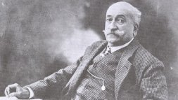

Emiliano de Arriaga
«Casi sin excepciones», escribe Jon Juaristi en su ensayo El chimbo expiatorio, «la literatura que se escribió en Bilbao entre 1890 y la guerra civil nació ya lastrada por el compromiso político. La más abundante y pertinaz de sus tendencias, el costumbrismo, reflejó de modo distorsional y rabioso los conflictos de la época». Trueba influye sin duda en los escritores costumbristas, entre los que se incluye el primer Unamuno, pero los tiernos valles vizcaínos y las verdes praderas virgilianas de Antón el de los Cantares ceden protagonismo a otro paisaje físico y político, a una inquietante geografía humana representada por las primeras oledas de inmigrantes. La edad de la inocencia ha tocado a su fin.
Emiliano de Arriaga es el representante más conspicuo de esta corriente. En 1896 publica su libro más famoso, el Lexicón etimológico, naturalista y popular del bilbaino neto. Sobrino del músico Juan Crisóstomo de Arriaga, Emiliano fue fundador y presidente de la Sociedad Filarmónica, teniente de alcalde por los canovistas y seguidor del incipiente nacionalismo vasco. Representa de un modo acabado la figura del burgués patriarcal, uno de aquellos bienaventurados caballeros que, según Alfredo de Echave (otro escritor costumbrista) «tuvieron el buen gusto de morirse sin conocer ese Ensanche horrible, obra de un desacertado tiralíneas ». Los costumbristas como Arriaga, que emplean en sus libros el llamado «dialecto bilbaino», castellano castizo con adherencias del euskera vizcaíno que el Lexicón pretende sistematizar, ven en peligro su pequeño mundo. La amenaza exterior viene representada por la figura del maketo.